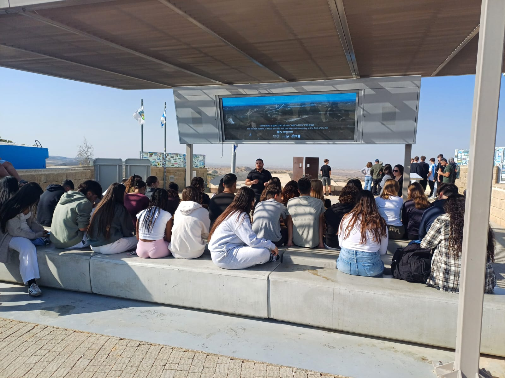
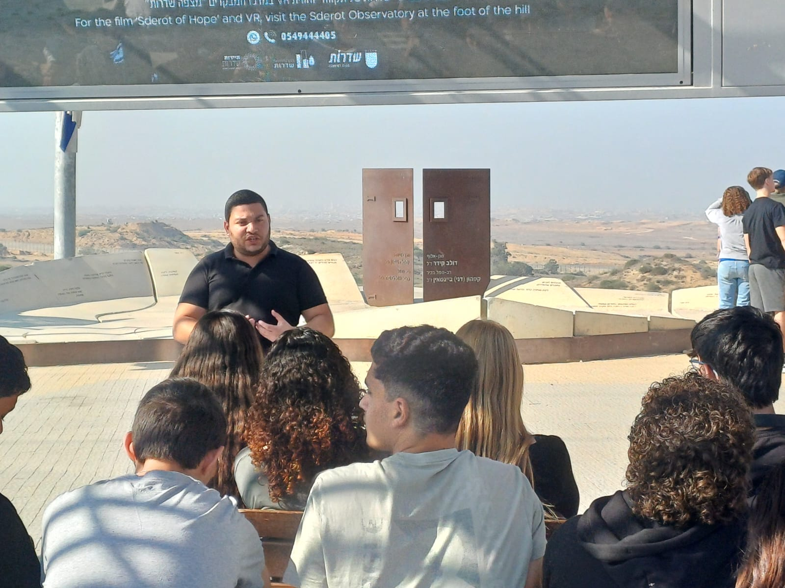
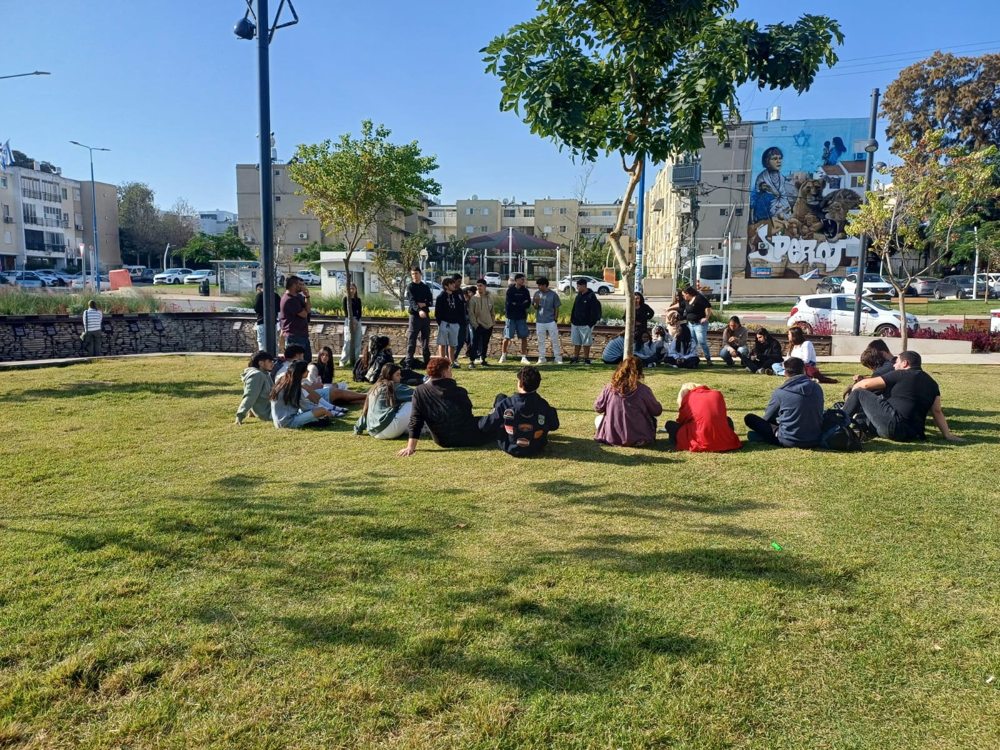
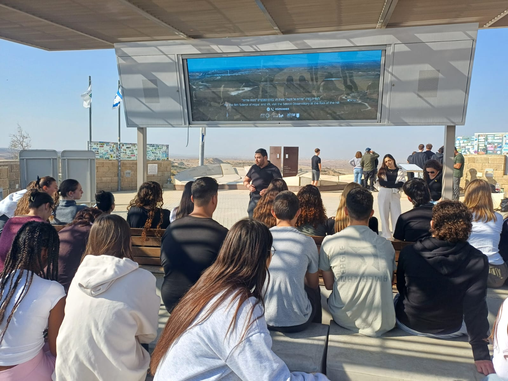
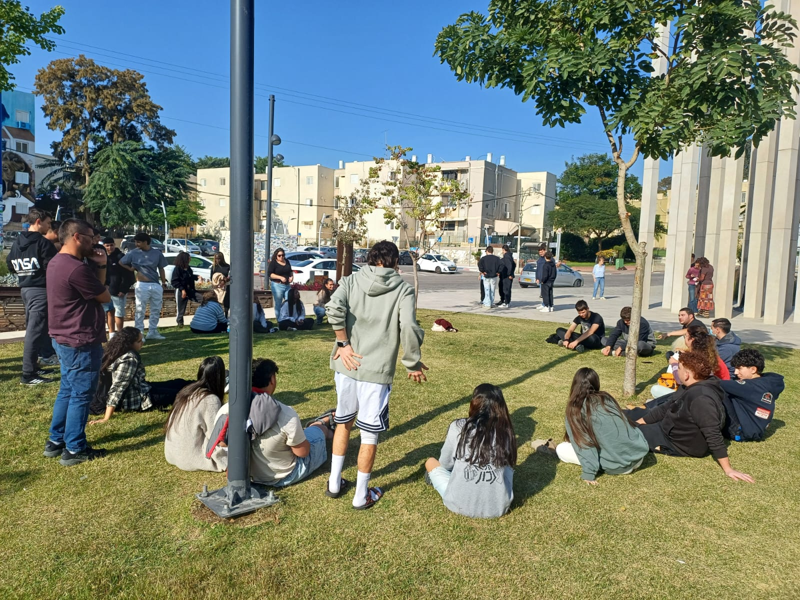

01
הפרט והכלל
מסיפורי הגבורה הבודדים בשטח – אל התפיסה הלאומית הרחבה של עם חפץ חיים. איך פעולה אישית אחת מצטרפת לסיפור גדול יותר.

דרך התקומה מציגים
כאן נולדת ציונות של מעשים. כאן צומחת המנהיגות של מחר.
מסע עומק רגלי וערכי, המובל על ידי לוחמי חזית התקומה.
למה דווקא כאן?
הסיפור הישראלי קיבל תפנית. הדור הצעיר שנמצא רגע לפני גיוס וחיים בוגרים לא צריך לחפש את השורשים שלו מעבר לים.
הזיכרון, הגבורה, השבר והתקומה הכי כואבים, הכי חיים והכי מעצבים – קורים ממש כאן, באדמת העוטף.
"מסעות תקומה בעוטף" הם לא עוד טיול שנתי ולא רק סיור באתרי מורשת קרב. זהו מסע עומק רגלי וערכי, המובל על ידי הלוחמים של חזית התקומה – אלו שהיו שם, אלו שלחמו, ואלו שנושאים את המשא הרעיוני של הדור הזה.
יחד, נשאל את השאלות הקשות, נביט למציאות בעיניים, ונחזור עם תשובות שישנו את פני החברה שלנו.
למה לחפש את השורשים והלקחים הלאומיים על אדמת פולין, כשההיסטוריה החיה, הכואבת והמכוננת ביותר שלנו נכתבת ברגעים אלו ממש בעוטף?
ציר המסע הרעיוני
המסע לא מתמקד רק ב"מה קרה", אלא ב"מה זה אומר עלינו". שלוש תחנות רוחניות וערכיות שהחניכים עוברים יחד.
מסיפורי הגבורה הבודדים בשטח – אל התפיסה הלאומית הרחבה של עם חפץ חיים. איך פעולה אישית אחת מצטרפת לסיפור גדול יותר.
מה למדנו על עצמנו באוקטובר 2023, ואיך בונים מתוך זה חברה חסונה, מאוחדת וערכית יותר?
חיבור ישיר בין חוויות הלחימה בעוטף לבין תפקידם של בני הנוער לקראת גיוסם לצה"ל – תרומה, שותפות ואחריות גורל.
בנו את המסע שלכם
שטח העוטף הוא "פלסטלינה ערכית" – הכל אפשרי, הכל גמיש. שלושה שלבים פשוטים, ויש לכם מסע מותאם אישית.
בחירת היקף המסע
איך תרצו לחוות את השטח
איזה דגש רעיוני מרכזי
לפגוש את מי שהיו שם
לוחמים בשטח שהם גם מחנכים בנשמה. דמויות לחיקוי שיודעות לתווך את רגעי השיא של הלחימה לכלים של מנהיגות ועשייה אזרחית.

לוחמי מילואים שרובם גם תושבי העוטף. חיים את השטח ומכירים כל סיפור מקרוב.
מבט מפוכח על המציאות הביטחונית, מעבר לסיפורים הסטנדרטיים.
סיור עמוק בלב השדות החקלאיים ועל קו הגבול ממש, במקומות שאחרים לא מגיעים אליהם.
לא הרצאה פרונטלית – שיח בגובה העיניים, דיון פתוח, שאלות אמיתיות.
קולות מהשטח
לא הרצאה – חוויה רגשית מטלטלת ומצמיחה. אלה החניכים שכבר היו במסע.

"חזרנו אחרי שלושה ימים, ופתאום הסיפור הזה הוא לא חדשות בטלוויזיה - הוא שלי."
— תלמידת י"ב, מסע שכבת קיבוצים

"לראשונה הבנתי מה הולך להיות התפקיד שלי בעוד שנה. זה לא רק גיוס – זו אחריות."
— חניך מכינה קדם-צבאית

"השכבה שלנו לא הייתה אותו דבר אחרי המסע. נוצר משהו שאי אפשר להפיק בכיתה."
— רכזת שכבה, חטיבה עליונה
מפת המסע הערכית
כל תחנה במסלול נושאת איתה ערך לחיים. אלו תחנות לדוגמה, והן נתפרות יחד איתכם לפי דגש המסע שבחרתם.
ערך הרעות והערבות ההדדית
עוצמתה של קהילה
חיים על הגדר – נחישות ושייכות
מבט עירוני אל המציאות הביטחונית
הטרקטור ששב לחרוש – חזרה לחיים
הסתכלות פנימה מהקצה
שלב ראשון
כל מסע מתחיל בשיחה. ספרו לנו על הקבוצה שלכם, מה האתגר שאתם רוצים שהמסע יענה עליו, ונחזור אליכם בהתאמה מדויקת.